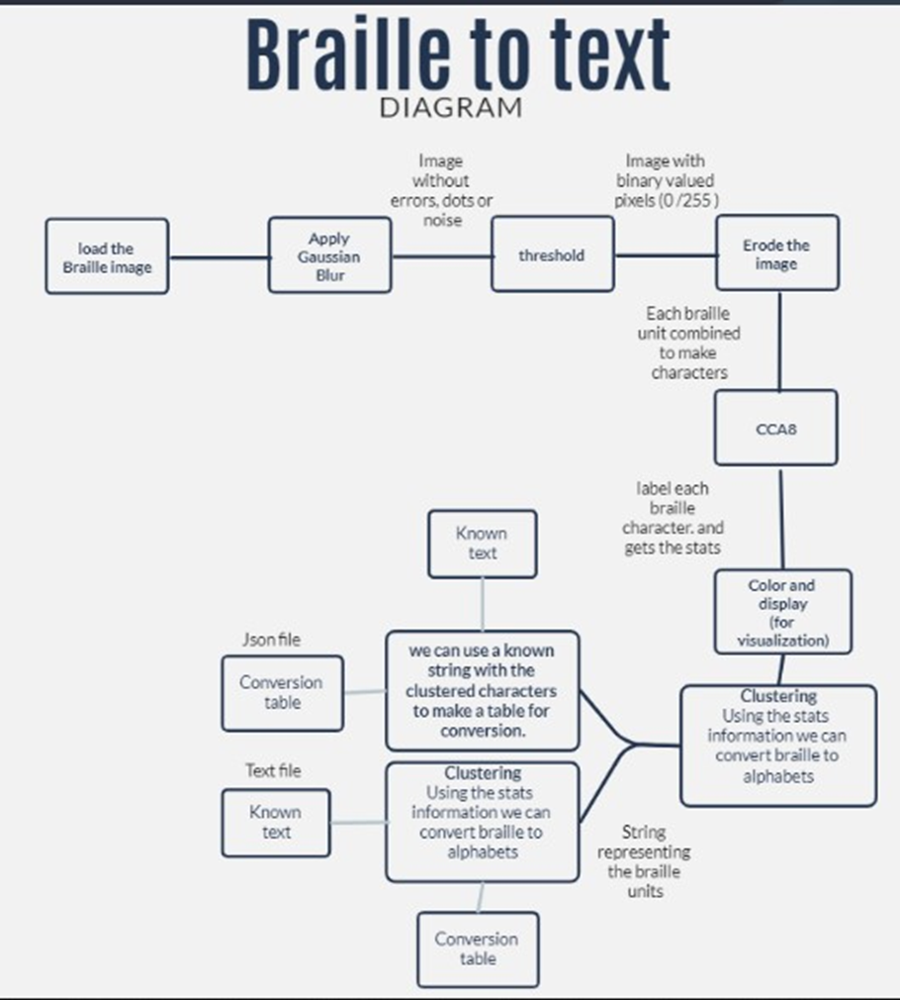
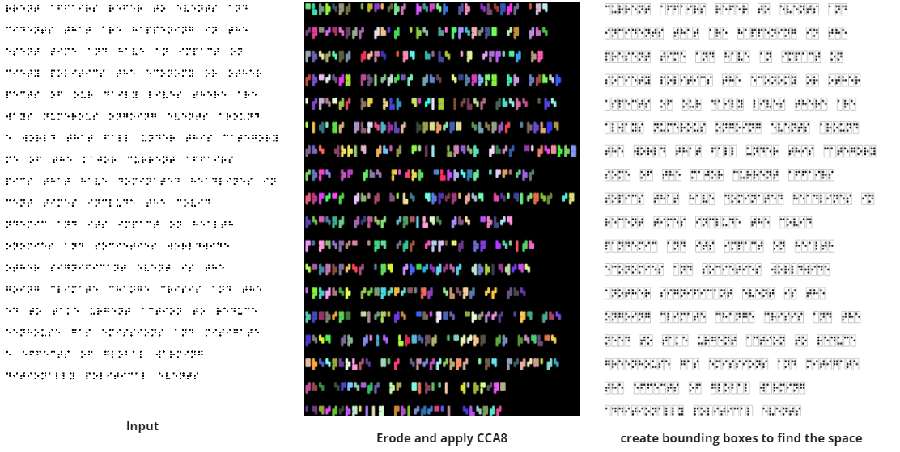

Overview
Braille is a system of raised dots read by touch. Converting a photographed page of Braille into text by hand is slow and error-prone, so this project automates it with a classical image processing pipeline rather than a trained model: Gaussian blur, thresholding, erosion, and connected component analysis (CCA) detect each individual Braille character, a clustering step converts each one into a 6-character string, and a lookup table translates that string back into a letter.
How it works
Preprocessing
- Apply Gaussian blur to remove imperfections and stray pixels from the input image.
- Convert the 8-bit grayscale image to binary to improve connectivity analysis.
- Erode the image to shrink the white regions, causing black dots to spread and join into characters.
Methodology
- Apply the CCA8 function to the eroded image to get the character count, per-object statistics, and a labeled object map.
- Convert each object into a 6-character string, where each character represents one Braille dot.
- Run post-processing (key creation and enhancement) to keep the translation accurate.
- Output the converted text.

Post-processing
- Use the object statistics to measure the distance between consecutive objects, marking a gap as a space if it passes a threshold.
- Draw a bounding box around each object from its length, width, and starting point, so one character is processed at a time.
- Run the clustering step on each character: treat it as a vertical rectangle, crop it into a 3x2 grid, and check each cell to decide if it is a raised dot or blank.
Translation
The conversion table is a JSON file mapping Braille characters to English letters. Each key is a 6-digit binary string representing a 3x2 Braille dot pattern (the first three digits are the left column, the last three are the right column), and each value is the corresponding lowercase letter. A translate function looks up each detected character in this table to build the final output text. The conversion key itself was generated using the same processing pipeline.

Output
The pipeline successfully converted a 640-character Braille passage back into its original English text, a paragraph about current affairs covering topics like the COVID-19 pandemic and climate change.
← Back to all projects